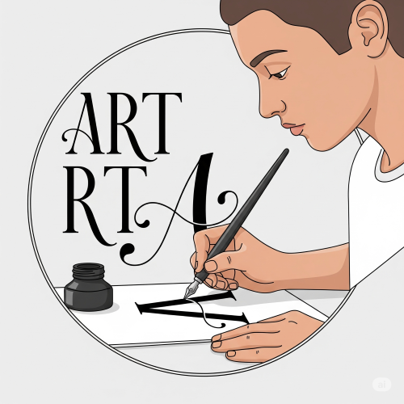
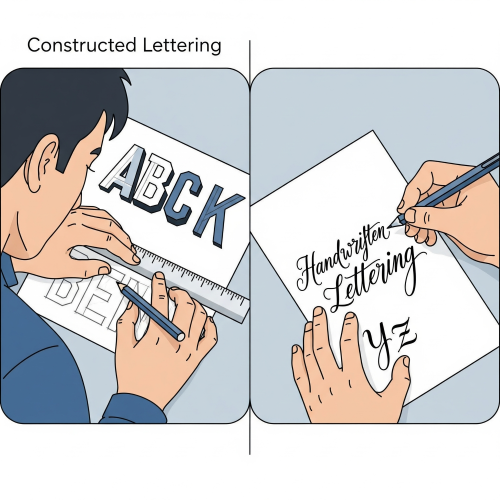

LETTERING
Meaning of Lettering
Lettering is the art of drawing or designing letters in a clear, readable, and attractive way. It involves the careful creation of letters by hand or with tools to communicate a message. Unlike handwriting, which is done quickly for personal use, lettering is done slowly and deliberately to make the text look beautiful and professional.

Lettering is an essential skill in art because it helps in designing posters, signs, advertisements, packaging, greeting cards, and book covers. It is also used to add titles and information to artworks.
Types of Lettering
Based on your input, we are about to explore the different ways to create letters. We will cover the two primary approaches

- Constructed Lettering : This is the type of lettering that is drawn using shapes and straight lines. It is done using ruler and pencil. Examples are block letters, Roman letters, and Gothic letters.
- Handwritten Lettering : This is done by hand freely without the use of tools. It looks like normal writing and is used when speed is needed.
Uses of Lettering
- It can be use For communication.
- it is used To pass messages on posters, signs, and notice boards.
- it is used To educate and inform others.
- it is used For advertisement and decoration.
- it is used On charts and diagrams
Construction of Letters (A–Z)
Lettering requires good knowledge of how to construct letters properly. The artist must learn how to draw:
- Uppercase letters (A–Z) – Bold, formal, and used for headings or titles.
- Lowercase letters (a–z) – Used for normal text or body writing
To construct letters:
- Draw guidelines (top line, middle line, and base line).
- Use a pencil and ruler to measure equal height and spacing.
- Begin with basic strokes (vertical, horizontal, diagonal).
- Join the strokes carefully to form the shape of each letter
Qualities of Good Lettering
- Simplicity : Letters should be easy to read. Avoid using too many decorations or complicated styles.
- Legibility : Every letter must be clearly written so that readers can easily understand the words.
- Spacing : Letters and words must be spaced properly. Too much or too little space makes the writing hard to read.
- Consistency : All letters should be of uniform size, height, and style.
- Neatness: Good lettering must be clean and tidy without smudges or crooked lines.
Preparation of Artwork for Display Using Lettering
When displaying artworks, lettering is important for:
- Labelling – Adding titles, artist names, and explanations to artworks.
- Framing – Creating a border or frame around artworks with names and messages.
- Fixing – Attaching artworks neatly on boards or walls with proper labels.
Display Techniques Involving Lettering
Lettering helps in organizing artworks for display. Some techniques include:
- Categorizing – Grouping artworks under headings like “Still Life”, “Craft”, or “Design”
- Designing of Space – Arranging labeled artworks evenly in a neat layout.
- Mounting on Boards – Displaying artworks on cardboards with heading labels in bold letters
Tools and Materials for Lettering
- Pencil – For sketching the letters.
- Ruler – To draw straight lines and spacing.
- Eraser – To clean mistakes.
- Set square – To create angles and right corners.
- Coloured pencils or markers – For decorating the letters.
- Cardboard, Paper, or Mounting Board – Surface for writing or displaying letters
Care of Lettering Tools
- Clean rulers, set squares, and pencils after use.
- Keep all tools in a case or safe place.
- Store cardboard and paper in a flat, dry area.
Common Mistakes in Lettering and How to Avoid Them
- Letters not aligned properly → Use guide lines.
- Spacing too tight or too loose → Measure and maintain equal space.
- Uneven height of letters → Use a ruler for consistency.
- Slanted or crooked lines → Practice slowly and carefully.
- Smudging or dirty work → Use light pencil first, then darken later.